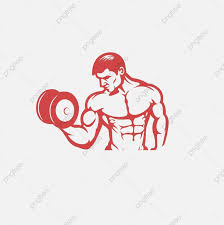
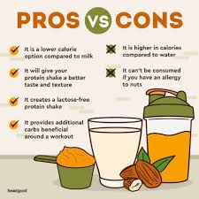
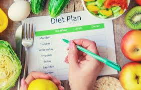

Best Fitness Gym in town
The best fitness GYM of XYZ city is here. Yes!! The most awaited and affordable gym, in your city. Visit our website on your web browser or contact us using our contact number.
You can also visit us at the nearest branch for more details.
Main branch: "ABD road, near complex, XYZ city."

Pricing
We provide three types of monthly plans affordable to maximum number of people who are interested to join a gym.
Choose a plan which suits you the most.
Free
- Cycling Room
- Rubber Floor
- Security
- Shower Facility
- Air Conditioned
- Parking
Pro
- Services of Free membership included
- Small Locker
- Cardio Equipments
- Yoga Materials Provided
- Parents Waiting Area
- Kids Playing Area
Enterprise
- Services of Pro Membership included
- Swimming Pool
- Valet Parking
- Pets Allowed
- Wellness Center
- Personal Trainer included
FREE PROTIEN POWDER
- Protein powders are nutritional supplements that may help build muscle, repair tissue, and make enzymes and hormones.
- Using protein powder may also aid weight loss and help people tone their muscles.
- As well as contributing to muscle growth, protein can help repair damaged muscles and tissues. As a result, athletes may use protein powder to speed up recovery from muscle soreness after exercise.
- Many studies report, trusted sources suggest that taking protein supplements after exercise can aid recovery by reducing muscle damage and improving muscle performance and muscle protein synthesis.
- As there are many benefits of taking protien powder after workout, we provide free protien after workout. Protien is available to every member of the GYM no matter what their membership plan is!!

DIET PLANS
- It protects you against many chronic noncommunicable diseases, such as heart disease, diabetes and cancer.
- Eating a variety of foods and consuming less salt, sugars and saturated and industrially-produced trans-fats, are essential for healthy diet.
- Eat a meal that has both carbohydrates and protein in it within two hours of your workout
- Eating after you work out can help muscles recover and replace their glycogen stores.
- You won't have to worry about creating a diet plan on yourself or pay a dietician. By purchasing our GYM membership, you can buy a diet plan that suits your body. The diet plan will be created for you by your trainer. If you don't have a trainer, you can contact the Manager.
